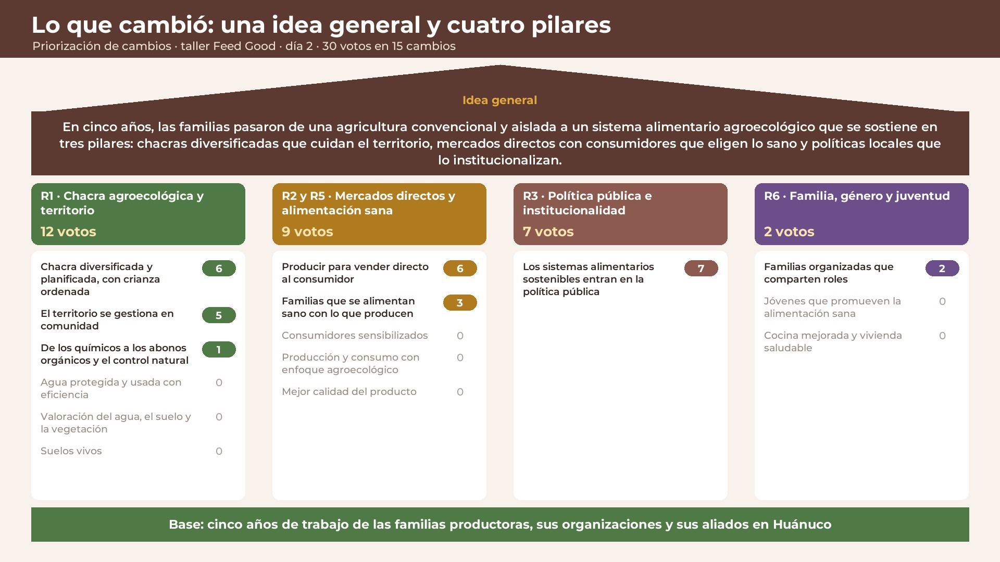
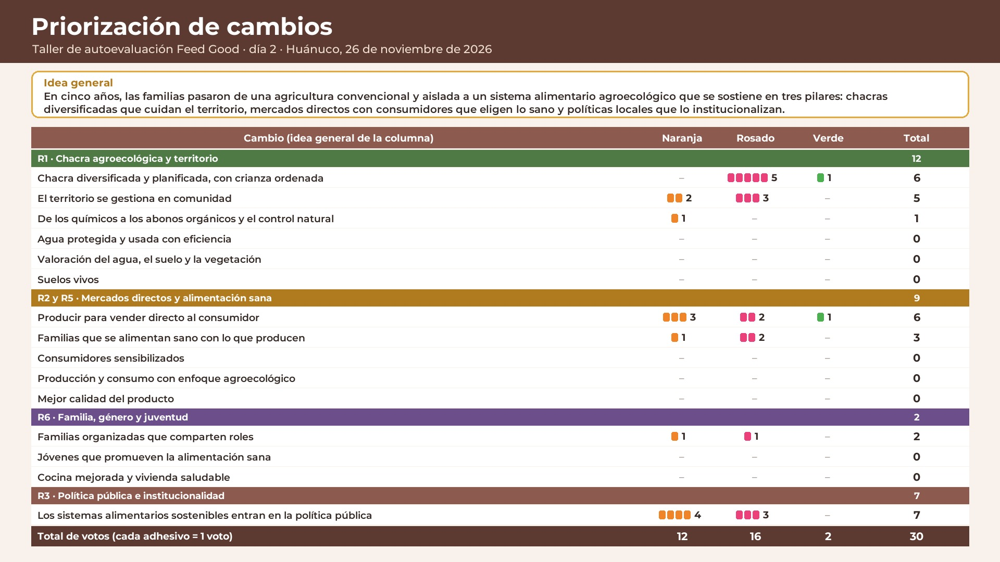

Idea general que engloba todos los cambiosEn cinco años, las familias pasaron de una agricultura convencional y aislada a un sistema alimentario agroecológico que se sostiene en tres pilares: chacras diversificadas que cuidan el territorio, mercados directos con consumidores que eligen lo sano y políticas locales que lo institucionalizan.


| Cambio (idea general) y tarjetas pegadas en la columna | Naranja | Rosado | Verde | Total |
|---|---|---|---|---|
| R1 · Chacra agroecológica y territorio 12 votos | ||||
Chacra diversificada y planificada, con crianza ordenada
| – | 5 | 1 | 6 |
El territorio se gestiona en comunidad
| 2 | 3 | – | 5 |
De los químicos a los abonos orgánicos y el control natural
| 1 | – | – | 1 |
Agua protegida y usada con eficiencia
| – | – | – | 0 |
Valoración del agua, el suelo y la vegetación
| – | – | – | 0 |
Suelos vivos
| – | – | – | 0 |
| R2 y R5 · Mercados directos y alimentación sana 9 votos | ||||
Producir para vender directo al consumidor
| 3 | 2 | 1 | 6 |
Familias que se alimentan sano con lo que producen
| 1 | 2 | – | 3 |
Consumidores sensibilizados
| – | – | – | 0 |
Producción y consumo con enfoque agroecológico
| – | – | – | 0 |
Mejor calidad del producto
| – | – | – | 0 |
| R6 · Familia, género y juventud 2 votos | ||||
Familias organizadas que comparten roles
| 1 | 1 | – | 2 |
Jóvenes que promueven la alimentación sana
| – | – | – | 0 |
Cocina mejorada y vivienda saludable
| – | – | – | 0 |
| R3 · Política pública e institucionalidad 7 votos | ||||
Los sistemas alimentarios sostenibles entran en la política pública
| 4 | 3 | – | 7 |
| Total | 12 | 16 | 2 | 30 |
Fuente: muro de priorización del día 2; fotografías procesadas con el sistematizador del taller y conteo de adhesivos verificado foto por foto. En la columna «Agua protegida y usada con eficiencia», la tarjeta superior quedó cortada en la fotografía: conviene confirmar en sala que no tenga adhesivos.